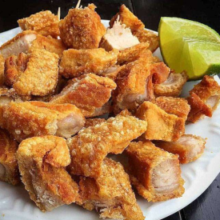

torresmo
INGREDIENTES
- 2 kg de toucinho
- 2 colheres (sopa) de banha
- Sal a gosto
Porções: Serve 07 pessoas
Tempo de Preparo: 30 minutos
- Primeiro, retire toda a pele do toucinho.
- Em seguida, corte em pequenos cubos e polvilhe com um pouco de sal refinado. Reserve.
- Coloque, em uma panela, a banha e leve ao fogo brando. Cuide para que não fique muito quente.
- Acrescente o toucinho cortado e frite lentamente.
- Quando corar, tire com a escumadeira e deixe escorrer em papel absorvente.
- Servir ainda quente.